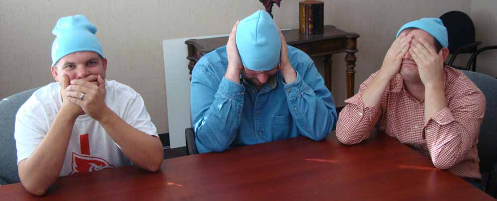

Meanwhile, in the Hall of Web Standards...
What's with the blue beanies?
November 30 is Blue Beanie Day - an international celebration of web standards observed by UI developers everywhere (including members of our Louisville dev team, pictured above). Learn more about the event on Tumblr, then check out photos of other developers in their blue beanies on Flickr.